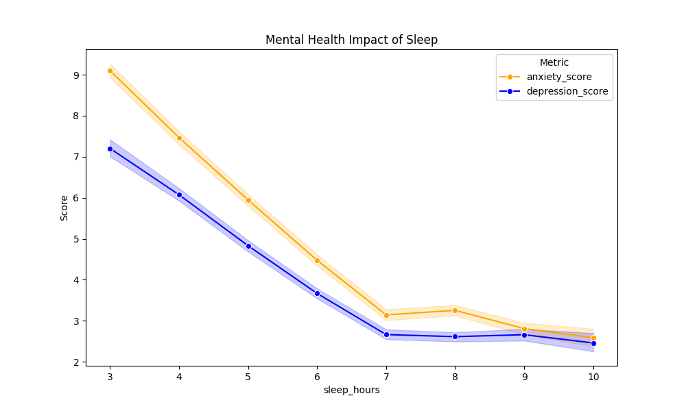

Unlocking the secrets of student success: Sleep, Study, and Balance.
sleep less than 7 hours
points for well-rested students
students analyzed
Our analysis of 4,001 students reveals that while studying hard matters, sleeping well provides the critical edge needed to outperform.
Average Performance Index by Daily Sleep Hours
Mental Health risk doubles as sleep drops below 5h.

Extracurricular activities provide a hidden boost.
Do activities hurt grades? The data says no.
Enter your habits into our prediction model to see your estimated Performance Index.
Start Assessment